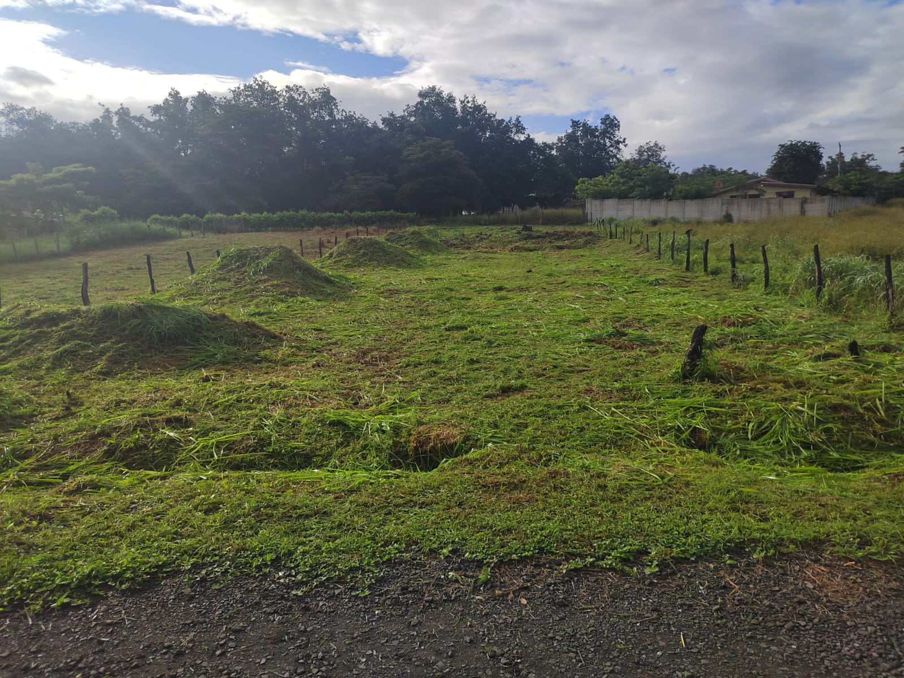
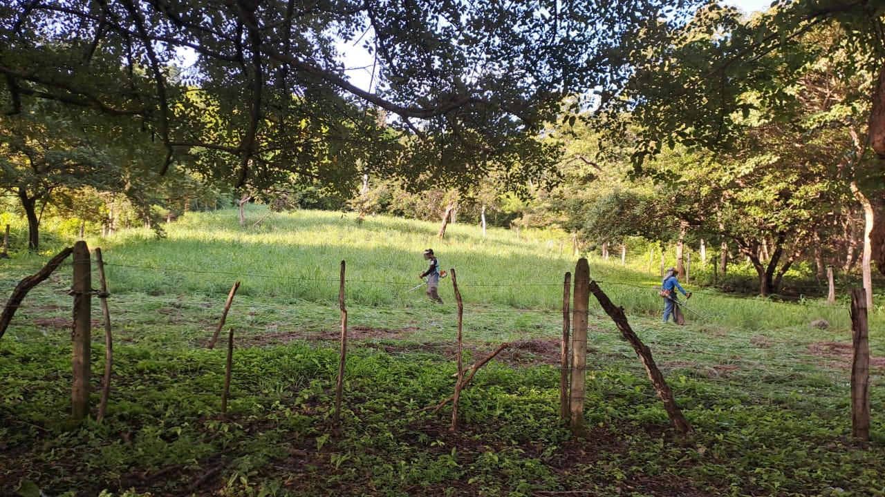
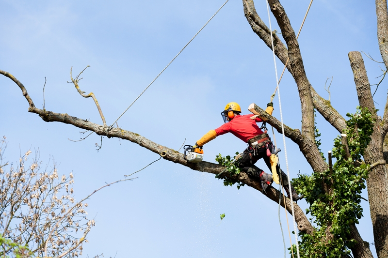
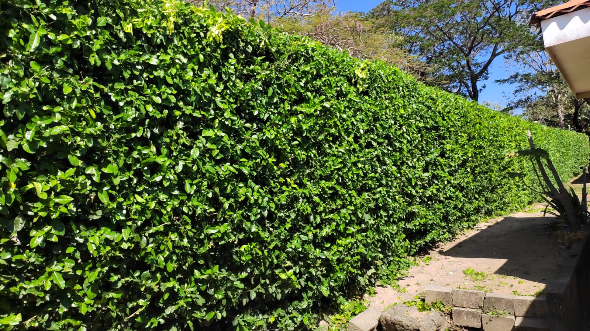
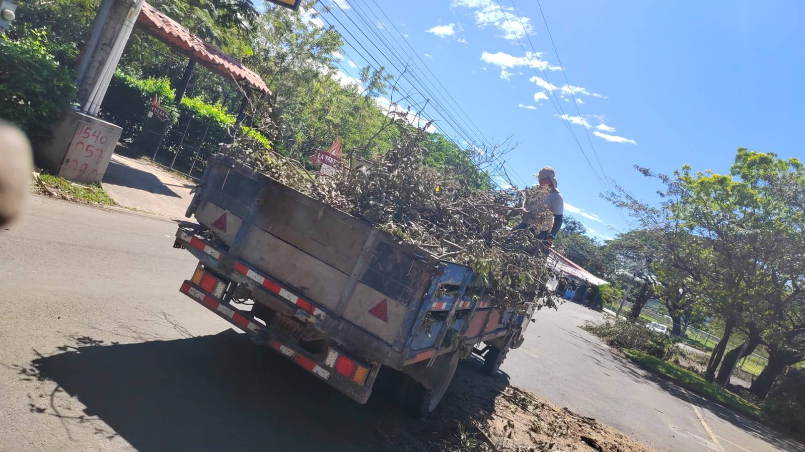
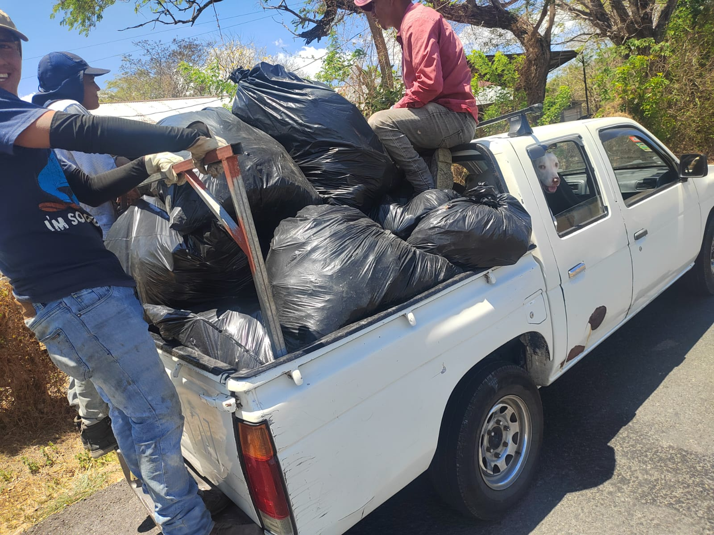

Expertos en jardinería y servicios forestales en Liberia, Guanacaste. Transformamos espacios verdes con profesionalismo y garantía. Cotizaciones disponibles, llamar o escribir a cualquiera de ambos números.
Cotizar AhoraDiseño, mantenimiento y embellecimiento de jardines residenciales. Creamos espacios verdes únicos para su hogar.
Control profesional de plagas en jardines y áreas verdes. Productos seguros y efectivos para proteger sus plantas.
Limpieza y preparación de terrenos. Eliminamos maleza y preparamos el suelo para nuevos proyectos paisajísticos.
Poda profesional y corta de árboles. Mantenemos la salud de sus árboles con técnicas especializadas.
Tramitación de permisos oficiales para corta de árboles. Cumplimos con toda la normativa legal vigente.
Evaluación técnica y catalogación de especies arbóreas. Informes detallados por ingeniero forestal certificado.
Gestión completa de permisos forestales de todo tipo. Acompañamiento profesional en todos los trámites.
Diseño paisajístico y siembra de jardines. Seleccionamos las especies perfectas para cada espacio y clima.
Años de experiencia en jardinería y servicios forestales con resultados comprobados en toda la región.
Contamos con Víctor Venegas Sánchez, ingeniero forestal certificado para garantizar trabajos técnicos de calidad.
Evaluamos su proyecto y ofrecemos cotizaciones detalladas sin ningún compromiso de su parte.
Todos nuestros trabajos cuentan con garantía de calidad y seguimiento post-servicio.






Incluya fotos del área de trabajo y descripción del servicio que necesita. Esto nos ayuda a brindarle una cotización más precisa.
Para llamadas telefónicas, preferiblemente después del mediodía. Si uno no atiende, el otro podrá atenderlo con gusto.
Nuestro equipo está comprometido en brindarle el mejor servicio y asesoría profesional para su proyecto.
Ubicados en Liberia, Guanacaste
Servicio en toda la provincia de Guanacaste
Cotizaciones disponibles, llamar o escribir a cualquiera de ambos números